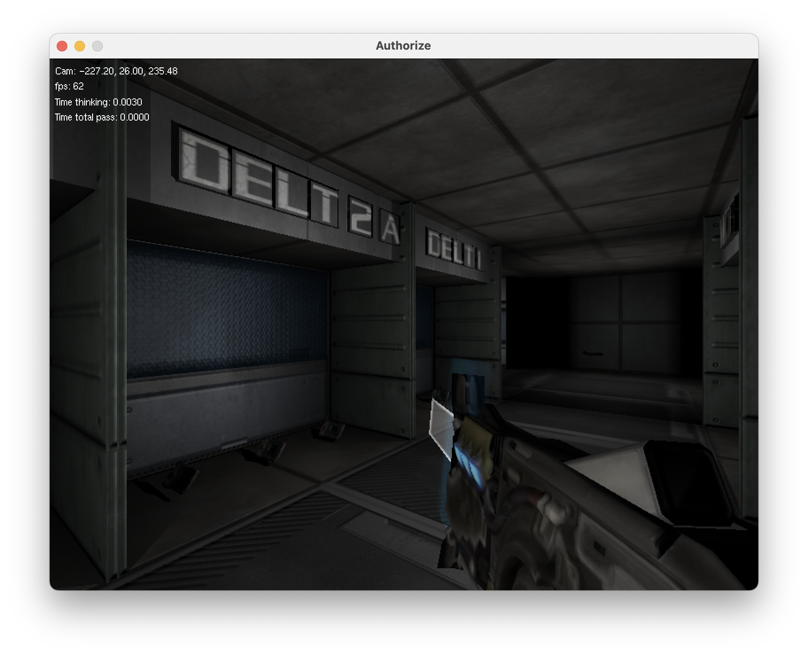

In 2012, I developed the ARB plugin available in the OpenGL library individually, and the Vortex Engine game engine to exemplify dynamic interactive shading. Interactive shading of the surfaces interacting with light on the specified map has been made. I added animation, particle detailing and light shadow volume in the game engine. With this engine I developed, Hasan Kalyoncu University (former name: Gazikent University) became my internship application project.
It is designed as an advanced graphics engine.
This engine is designed as a virtual reality and simulation usage area.
